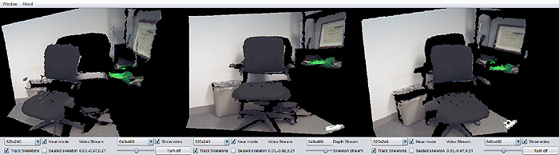
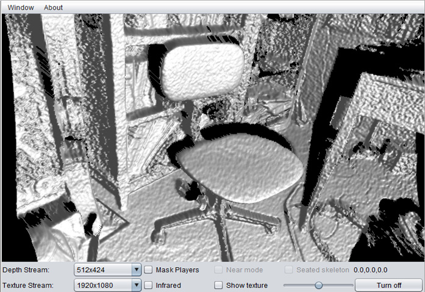
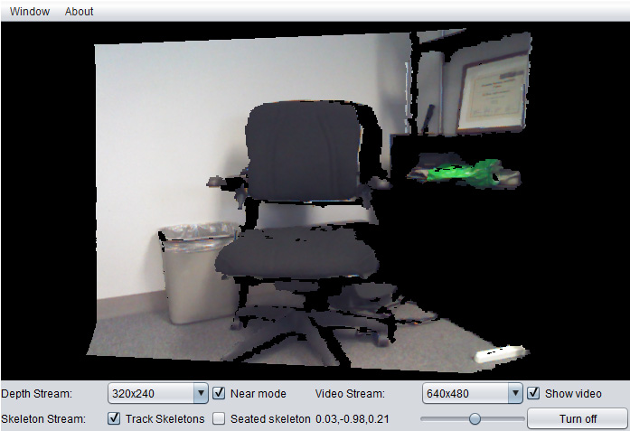

UFDW Java library
J4K Java library
J4KSDK.class API
DepthMap.class API
Skeleton.class API
VideoFrame.class API
Source Code Examples
SimpleExample
VideoViewerApp
KinectViewerApp
AugmentedRealityApp
ImageAvatarApp
XEDConvertApp
MultipleKinectApp
J4K Projects Gallery
Published Papers
Download
Install in Eclipse
Watch video tutorial
People
Frequently Asked Questions
J4K Java library
J4KSDK.class API
DepthMap.class API
Skeleton.class API
VideoFrame.class API
Source Code Examples
SimpleExample
VideoViewerApp
KinectViewerApp
AugmentedRealityApp
ImageAvatarApp
XEDConvertApp
MultipleKinectApp
J4K Projects Gallery
Published Papers
Download
Install in Eclipse
Watch video tutorial
People
Frequently Asked Questions
Kinect Viewer App
This is a simple Kinect viewer that visualizes the live depth and color frames as a 3D textured surface. It also shows the detected skeletons. It offers many choices for changing the resolution and type of the streams as well as controlling other parameters of the sensors, reading the current values of the accelerometer, and other features.
System Requirements: 1) The latest Java update must be installed and enabled in your computer, 2) You need to have a Microsoft Kinect sensor (works with any type of Kinect, Kinect for XBOX, Kinect for Windows, Kinect 2, or new Kinect), 3) The Microsoft Kinect SDK (version 1.0 or higher) must be installed in your computer.

The source code consists of the following files:
The image below is a screenshot of the KinectViewerApp that shows a 3D visualization of the live depth stream. In the application, the live scene can be rotated by dragging your mouse or your finger on your touch screen.

The image below is a screenshot of the KinectViewerApp that shows a visualization of the live depth and video stream as a 3D textured surface. In the application, the live scene can be rotated by dragging your mouse or your finger on your touch screen.

Disclaimer: The names JAVA and KINECT and their associated logos are trademarks of their respective copyright owners Oracle and Microsoft. None of these companies endorse, fund, or are in any way associated with the J4K library.
Disclaimer: This software is provided for free without any warranty expressed or implied for academic, research, and strictly non commercial purposes only. By downloading this library you accept the Terms and Conditions.